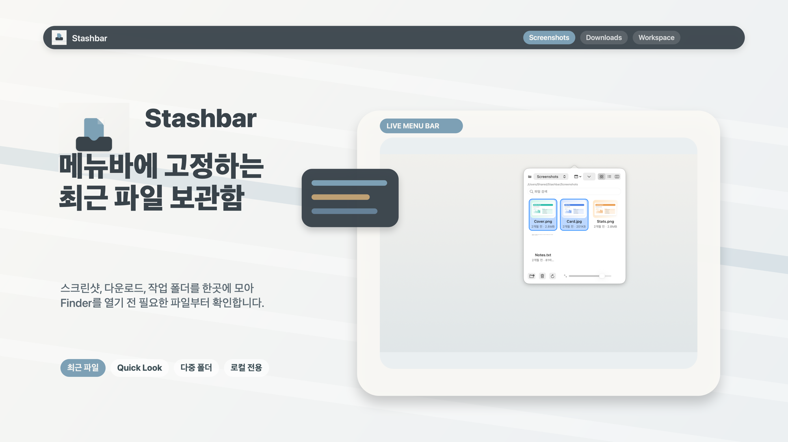

메뉴바의
최근 파일
자주 보는 폴더를 메뉴바에 고정하고, 최근 파일을 한눈에 — Finder를 앞에 두지 않아도 됩니다.

자주 보는 폴더를 메뉴바에 고정하고, 최근 파일을 한눈에 — Finder를 앞에 두지 않아도 됩니다.

반복적으로 파일을 열고 확인하는 흐름을 더 짧고 자연스럽게 만드는 데 집중했습니다.
스크린샷, 다운로드, 작업 폴더처럼 자주 여는 위치를 추가하면 실시간으로 변경사항이 반영됩니다.
아이콘, 목록, 계층 보기 — 상황에 맞게 전환하고 슬라이더로 미리보기 크기를 조절합니다.
Space 키로 선택한 파일을 즉시 미리보기 — 선택을 바꾸면 자동으로 갱신됩니다.
복사(⌘C), 잘라내기(⌘X), 붙여넣기(⌘V), 휴지통(⌘⌫) — 익숙한 그대로.
메뉴바 팝오버에서 다른 앱이나 Finder 창으로 파일을 바로 드래그할 수 있습니다.
썸네일이 디스크에 저장되어 앱을 재실행해도 즉시 표시됩니다.
모던 SMAppService 기반 — 부팅 후 항상 메뉴바에서 대기합니다.
Security-scoped bookmark로 사용자가 선택한 폴더 접근만 안전하게 영속화합니다.
메뉴바에서 한 번의 클릭으로 닿는 거리에.


Stashbar은 데이터를 수집하지 않습니다. 네트워크 연결도 없습니다. 여러분이 선택한 폴더만, 여러분의 Mac 안에서만 동작합니다.
개인정보 처리방침 보기 →